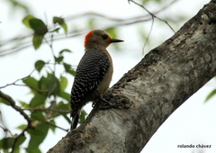

Carpintero Yucateco (Melanerpes pygmaeus)

El Carpintero Yucateco (Melanerpes pygmaeus), llamado igual Che'jum en maya, es una ave con un tamaño aproximado de 16.5 cm, esta ave la podremos encontrar en la Península de Yucatán y parte de Belice en bosques tropicales o subtropicales secos o matorrales costeros. Su alimentación consiste de frutos e insectos.
Caracteristicas
- El plumaje es de color gris y su vientre llega tener una coloración amarilla con una mancha de color rojo
- sus alas tienen un patrón con negro y blanco y cola negra.
- Para diferenciar el sexo del ave, los machos tienen una “corona” roja en su cabeza, las cuales las hembras carecen.
- Alrededor del pico, se encuentra una coloración amarilla por la cual es punto clave para la identificación de esta ave.
- el largo del pico mide aproximadamente la mitad del largo de la cabeza.
Haz click aqui para volver a la tabla